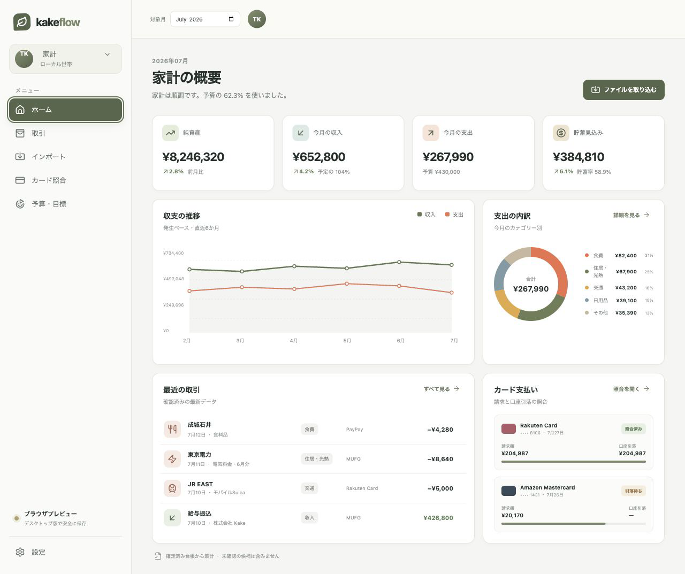

台帳、原本、資格情報、レポートをローカル管理
STABLE 1.0.0 LOCAL-FIRST DESKTOP
原本から、
判断できる家計へ。
銀行、カード、レシート、電子マネー、証券口座。ばらばらの記録を端末内で取り込み、確認が必要な項目だけを整理。確定した台帳から、家計の全体像と次のアクションを見渡せます。
macOS Apple Silicon · ad-hoc署名 · 未Notarize。ダウンロード後にSHA-256を確認してください。

OCRやルールは候補を作り、自動記帳しない
CSV行、PDFページ、レシートへ戻れる
カード利用と後日の引落を別の事実として照合
ONE REVIEWABLE FLOW
集める。確かめる。確定する。
ファイルを入れた瞬間に家計を上書きしません。原本、抽出結果、確認候補、確定仕訳を分け、判断の履歴を残します。
- 01 · SOURCE原本を保存
CSV、Excel、PDF、画像、ZIP、EMLをそのまま保持。
IMMUTABLE - 02 · EXTRACT形式を厳密に解析
文字コード、ヘッダー、金額、通貨、行範囲を検証。
FAIL CLOSED - 03 · REVIEW候補を確かめる
口座、カテゴリ、重複、返金、分割仕訳を修正。
HUMAN DECISION - 04 · POST台帳へ確定
承認した候補だけを均衡した仕訳として保存。
CONFIRMED LEDGER - 05 · ACT次を判断する
照合、予算、予測、投資、月次・年次レビューへ反映。
SOURCE BACKED
V1.0.0
返金・調整行はレビューで手動修正できます。 クレジット会社のPDF原本は変更せず、修正した仕訳とのリンクを残します。
CURRENT PRODUCT UI
同じ台帳を、仕事ごとに見る。
ホーム、取引、インポートは、対象月・口座・家族・計上基準を引き継ぎます。日本語・English・Tiếng Việtに対応しています。
WHAT SHIPS IN 1.0.0
日常支出から投資・家族まで。
日本の家計管理で頻出するカテゴリ、金融ファイル、カード照合、投資スナップショットをひとつのレビュー体験にまとめました。
ファイル・PDF・OCR
CSV、TSV、Excel、PDF、画像、ZIP、EML、Gmail、Drive、監視フォルダ。
- Shift-JIS
- 端末内OCR
- 重複確認
台帳・カード照合
二重仕訳、分類ルール、返金・調整、カード請求と銀行引落の照合。
- 原本証跡
- 集計対象
- 手動修正
資産・FIFO損益
証券取引、assetbalance(all)、通貨別評価、実現損益、スナップショット。
- 保有数量
- 取得原価
- 例外表示
予算・予測・レポート
月次・年次レビュー、固定費、異常支出、CSV・XLSX・PDF出力。
- 家計簿カテゴリ
- Action Center
- 範囲を維持
暗号化された受け渡し
共有・個人の範囲を分け、受信側で競合を確認してから一括反映。
- Audience
- Digest検証
- Atomic apply
DOWNLOAD 1.0.0
配布情報と制約を明確に。
公開ファイルはGitHub Releasesに置き、チェックサムを同じリリースに添付しています。
KakeFlow 1.0.0
- KakeFlow_1.0.0_aarch64.dmg
- ad-hoc署名・未Notarize
- SHA256SUMS.txtを同梱
- リリース詳細を見る
検証可能なソース
- React + TypeScript + Tauri 2
- Rust / SQLCipher
- 727 automated tests
- GitHub repository
現在の公開範囲
- Windows公開バイナリなし
- Google連携はテストユーザー向け
- 自動アップデートは無効
- 送金・支払い・発注は行わない
LOCAL-FIRST · REVIEWABLE · TRACEABLE
家計の数字に、根拠を残す。
原本を守り、人が確認した内容だけを、次の判断につなげます。